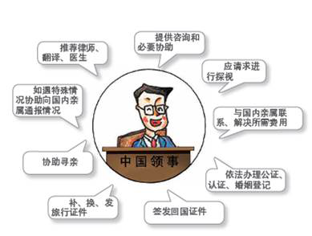
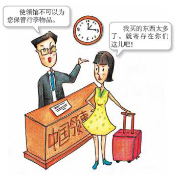
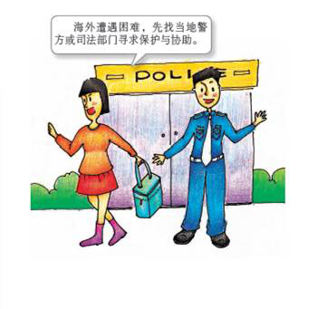
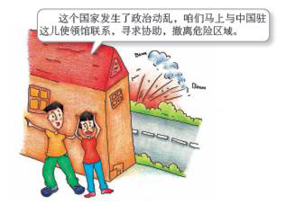
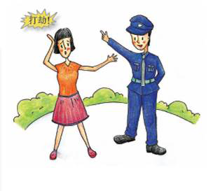
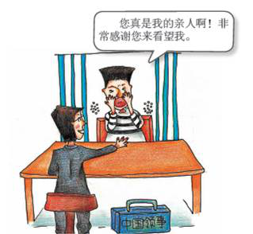

- 1、什么是领事保护？它与领事协助和领事服务有什么区别？
- 领事保护是指中国政府和中国驻外外交、领事机构维护海外中国公民和机构安全及正当权益的工作。
- 领事保护的实施主体是中国政府及其派驻国外的驻外使领馆。中国目前有260 多个驻外使领馆，他们都是实施领事保护的主体。
- 领事保护的方式主要是通过外交途径向驻在国当局提出交涉、表达关切或转达当事人诉求，敦促其依法、公正、及时、妥善地处理。
- 领事保护的法律依据，主要包括公认的国际法原则、有关国际公约、双边条约或协定以及中国和驻在国的有关法律法规。
- 领事保护的内容是中国公民、法人在海外的合法权益，主要包括：人身安全、财产安全、必要的人道主义待遇，以及与我国驻当地使领馆保持正常联系的权利等。公民要求获得超出所在国国民待遇或因从事非法活动造成的法律后果等，不属于领事保护合法权益的范围。
- 在实践中，领事保护一般针对海外中国公民安全和合法权益受到严重威胁或侵害的情况，如驻在国发生政局动荡、自然灾害、重大事故等危及海外中国公民的安全和合法权益；领事协助一般针对中国公民因客观原因或者自身原因陷入困境的情况，如海外中国公民因疏忽大意丢失财物等造成的暂时经济困难；领事服务一般指为海外中国公民提供的证件办理、民事登记等服务，如换 / 补发旅行证件、办理公证 / 认证、婚姻登记等。
- 2、领事官员可以为您做什么
- 
- （1）如所在国发生重大突发事件时，可以为您撤离危险地区提供咨询和必要的协助。
- （2）如您在外国服刑，或被拘留、逮捕，可以应您的请求或经您的同意进行探视。
- （3）如您遭遇意外，可以协助您将事故或损伤情况通知国内亲属。
- （4）如您遇到生计困难，可以协助您与国内亲属联系，请其协助解决费用问题。
- （5）如您在所在国与他人发生民事纠纷，或涉及刑事案件，或突发疾病，可以应您的请求，协助提供当地律师、翻译和医生等名单供您参考。
- （6）如您需要寻找国外失踪或失联亲人，可以代为向所在国有关部门提出请求。
- （7）可以根据中国法律法规，为在国外的中国公民颁发、换发、补发旅行证件并进行加注。
- （8）可以根据中国法律法规，为遗失旅行证件或无证件的中国公民签发旅行证或回国证明。
- （9）可以根据中国法律法规和相关国际条约，为中国公民办理公证或为当地相关部门签发的拟送往中国使用的文书办理领事认证。
- （10）在与所在国法律法规不相抵触的情况下，为居住在驻在国的中国公民办理婚姻登记。
- 3、领事官员不可以为您做什么
- 
- （1）不可以为您申办他国签证或办理签证延期。
- （2）不可以为您在当地谋职或申办居留证、工作许可证。
- （3）不可以替您提起诉讼，不可以替您调查海外犯罪或死亡案件。有关请求应由当事人向所在国当局提出。
- （4）不可以干预所在国的司法程序或法律事务，不可以仲裁或解决您与他人的劳资争议、商业纠纷、刑事案件、子女抚养权纠纷或家庭事务。
- （5）不可以为您提供导游、翻译等服务，或为您支付酒店、律师、翻译、医疗及旅行（机、船、车票） 费用或任何其他费用。
- （6）不可以将您留宿在使领馆内，或为您保管行李物品。
- （7）不可以为您购买免税物品。
- 4、常见问题（点击标题展开详细内容）
- （1）什么人可以得到中国政府的领事保护？
-
-
凡是依照《中华人民共和国国籍法》具有中国国籍者，都可以请求获得中国政府的领事保护。也就是说，只要您是中国公民，无论是大陆居民，还是香港、澳门和台湾同胞，无论是定居国外的华侨，还是临时出国的旅行者，无论是在国外学习的留学生，还是务工人员，都是领事保护的对象。
- （2）出国时持中国护照，现已取得居住国国籍，是否还能享有中国驻当地使领馆的领事保护？
-
根据《中华人民共和国国籍法》规定，中国不承认中国公民具有双重国籍。定居国外的中国公民，凡自愿加入或取得外国国籍者，即自动丧失中国国籍，因而不再享有中国驻外使领馆领事保护的权利。
- （3）正在办理移民者，是否还能享有中国驻当地使领馆的领事保护？
- 正在办理移民手续者，在手续完结、国籍变更之前仍是中国公民，属于领事保护的对象。
- （4）中国公民在何种情况下可以请求领事保护？
- 中国公民在其他国家境内的行为主要受国际法及所在国当地法律约束。中国公民（包括触犯当地法律的中国公民）在当地合法权益受到侵害，在已经自行采取必要措施仍不能有效维护自身合法权益时，即可向中国驻外使领馆请求领事保护。
- （5）中国公民怎样能获得中国政府的领事保护？在寻求领事保护时应注意些什么？
-

- 如果您的合法权益在所在国受到侵害，或遭遇不测需要救助，您可以就近联系中国驻外使领馆，反映情况和有关要求。使领馆将在工作职责范围内向您提供领事保护。如您的行为违法，或因自身行为不当导致您及他人陷入危险境地，或您滥用领事保护，使领馆有权对提供给您的领事保护做出限制。
- 权利和义务不可分离。对海外中国公民而言，每位公民都有寻求和获得领事保护的权利，但也应承担相应义务和法律责任。主要应注意以下几方面：
-
- 应对个人的出行选择、人身安全、资金安全和在海外的行为承担自身责任，应严格遵守当地和中国的有关法律法规；
- 应立足于当地救助。首先设法寻求所在国警方或司法部门的保护与协助以尽快摆脱困境，如上述部门不作为或者有不公正行为，再寻求使领馆介入并实施领事保护和协助；
- 应关注并听从外交部及中国驻外使领馆发出的安全提醒，当所在国发生严重事态，外交部及有关驻外使领馆提醒当地中国公民尽快撤离时，应及时响应，选择适当渠道撤离，避免陷入危险境地；
- 要求中国驻外使领馆实施领事保护时，必须提供真实信息，不能作虚假陈述；
- 在主观上有接受领事保护的意愿。使领馆在实施领事保护时必须遵循当事人自愿原则，充分尊重当事人的意愿；
- 诉求不应超出所在国国民待遇水平。使领馆在实施领事保护时不能帮助当事人获得比所在国国民更好的待遇；
- 不能干扰外交部或驻外使领馆的正常办公秩序，应尊重外交、领事官员；
- 依法缴纳办理各种证件、手续的相关费用；
- 使领馆提供的律师、翻译、医生名单仅供参考，并不必然保证其服务质量达到您的预期。您可另行选择其他律师、翻译和医生。
- （6）在国外遭遇恐怖袭击、严重自然灾害、政治动乱等紧急情况时，应如何寻求领事保护？
-

- 立即与就近的中国驻该国使领馆取得联系，以获得最新相关信息并进行注册登记。如您家人在国外与您失去联系，请您立即与中国驻当地使领馆取得联系，以获得最新相关信息，并提供您家人详细个人信息和联系方式等，以便使领馆协助查找。使领馆将在必要及可能时协助中国公民（含死伤人员）撤离危险区域（不一定是回国）。
- 妥善保存自己的重要证件和文件，包括护照、出入境记录、保险和银行记录等。
- 检查护照、签证是否有效，如需更新护照请即到使领馆办理。
- 将存放家中或随身携带的重要证件和资料双备份，以防万一。同时要保证自己驾驶的汽车安全及行驶正常，并储备必要的食品和药品。
- 不要消极等待。如尚有安全方式离开，应立即行动。
- （7）在国外发生交通、工伤等事故时，如何处理？
- 应立即向当地警方报案或通知雇主，并要求其通知您的亲友或中国驻该国使领馆。您可要求领事官员敦促所在国当局尽快调查事故原因，或向您提供律师、医生等名单，以便后续处理。
- （8）在海外受到人身侵害该怎么办？
-

- 应立即向当地警方报警，并索要一份警察报告（报警记录）复印件。同时与律师或医生（如需就医）联系，向中国驻当地使领馆反映情况。领事官员可以向您提供以下帮助：安排适当人员（如有性别要求）听取您的受害情况并承诺保护您的个人隐私；敦促警方尽快破案；了解案件进展情况；向您提供律师和翻译的名单；提供医院名单；补发丢失或受损的旅行证件；协助您与家人、朋友或雇主联系；寻求当地社会救助。但是，领事官员不能调查案件或干涉当地法庭的审理，不能代替您出庭，不能充当翻译，也不能替您支付律师费、医疗费或其他相关费用。
- （9）在居住国被拘留、羁押或监禁该怎么办？
-

- 如您需要面见中国使领馆领事官员，应首先向所在的警察、监狱部门提出。领事官员将根据您的请求前往探视，并保护您的合法权益，如人道待遇、公平待遇等。领事官员还可以帮助您与亲友取得联系，向您提供当地律师名单。但是，领事官员不能干涉当地法律程序，不能代替您进行诉讼。
- （10）在居住国受到雇主不公正对待或无故拖欠工资，如何处理？
-
- 您应当依据合同及当地有关法律法规与雇主协商解决。如协商未果，您可向当地法院提起诉讼。您可同时请求领事官员为您提供当地律师、翻译名单。领事官员可向您简要介绍所在国有关法律信息
- （11）持有效护照及签证在目的地国入境、出境或过境受阻时如何寻求帮助？
- 您首先应向当地主管部门如实说明入出境或过境事由，同时了解受阻原因。如您不懂当地语言，可要求对方提供翻译服务。如果您的请求仍然得不到有关部门的回应，可要求与中国驻当地使领馆联系，寻求帮助。使领馆领事官员将向有关当局了解情况，视情反映您的要求，或进行必要交涉，但不能保证您一定会被放行。如交涉未果，您应理智接受当地主管部门的决定；如确系受到对方不公正对待，要注意收集和保存证据，以便日后诉诸法律解决。
- （12）非法进入或滞留他国，既无有效证件，也无经济来源时，如何办理回国手续？
- 您应向中国驻当地使领馆如实报告本人真实、详细情况，包括姓名、出生日期、出生地、职业、家庭住址、联系电话、非法出境或滞留经过等。待您的原居住地公安机关核实、确认您的身份后，领事官员可为您颁发回国旅行证件。如您的家属已垫付您的回国费用，领事官员可协助购买回国机（车、船）票。
- （13）中国护照在海外遗失、被偷或被抢时怎么办？
-
- 请您即向当地警察部门报案，以便您向当地移民局申请出境签证时备用，同时向就近的中国驻当地使领馆申请补发护照或旅行证，以供回国使用。申请补发护照或旅行证所需的有关材料为：您本人完整、准确填写的《中华人民共和国护照/旅行证/回国证明申请表》、护照遗失/被盗抢的情况说明及照片。另外，请您尽量提供原护照复印件或其他个人身份材料。
- 我们提请您注意：买卖、转让、伪/变造、故意损毁中国护照是违法行为，涉案人将承担相应法律责任。
- （14）在海外遇到经济困难时，能寻求使领馆帮助吗？
- 中国公民在国外的费用应由自己负责解决。如果您因被盗、被抢等原因出现暂时经济困难，可向亲戚、朋友借款或通过家人汇款解决。如确有必要，您也可与中国驻当地使领馆联系，让家人汇钱至使领馆或外交部，并通过其转交。如确无法及时得到亲友救助，中国驻外使领馆可以提供小额垫款。受助中国公民须签署“还款保证书”并提供国内还款人有效联系方式，回国后在约定时间内还款。
- （15）家人在海外死亡，如何处理？
-
- 您可通过领事官员或亲友了解家人死亡原因和遗物（遗嘱）情况，并协助向当地有关部门申请获得死亡证明书等证明文件。中国驻当地使领馆可应申请为上述证明文件办理领事认证。领事官员不能调查死亡原因。如您对死因有疑问，可聘请当地律师向当地司法部门提出，请其作出合理解释或重新进行调查；亦可请领事官员协助向当地政府有关部门转交您的书面意见，请其对您的意见予以关注或将您的意见转达给当地司法机关。
- 如死亡涉及刑事案件并已在当地提起诉讼，您应聘请律师，密切跟踪庭审情况，同时可请领事官员协助关注案件，并在当地法律允许的情况下旁听庭审。如您对庭审情况或判决结果不满，可请律师协助上诉，同时也可通过领事官员协助向当地有关部门转达您的意见。但是，领事官员不能调查案件，也不能代替您出庭。
- 您可前往当地处理有关善后事宜，但一切费用（含国际旅费、食宿及市内交通费）须自理；赴有关国家的签证、宾馆预订、接送等手续须自行办理，亦可请有资质的旅行社协助；在国外如需翻译，使领馆可提供翻译名单，但费用须自理。
- 如果您因故（如被拒签、无足够旅费等）不能前往当地处理后事，可委托在当地的亲友代办遗体火化、骨灰和遗物送回等事宜；如当地主管部门要求，您应提供经国内公证机关公证并经外交部（或其委托的地方外办）以及有关国家驻华使领馆认证的授权委托书。如当地法律法规允许，亦可委托领事官员代为处理上述事宜（费用需自理），但您应事先提供经国内公证机关公证并经外交部或其委托的地方外办认证的授权委托书。
- 如果您希望将遗体运回国，中国驻当地使领馆可向您提供办理运送遗体事务的公司名单。运送遗体的费用需要自行承担。
- 由于国外法律规定不同，如家属长期不处理遗体，不仅无助于问题解决，当地有关部门还可能根据当地法律规定，在一定期限内将遗体进行埋葬或火化。
- 死亡案件的处理时间可能很长，在这种情况下，您可聘请当地律师跟进处理。中国驻当地使领馆只能在职权范围内向您转告当地主管部门所提供的案件处理情况。
- （16）家人在国外失踪或遭绑架，如何求助？
- 应尽快向当地警方报案。您也可向中国驻当地使领馆报告有关情况，包括失踪或被绑架者姓名、性别、年龄、职业、相貌特征和在国外住址等并寻求协助。领事官员将根据您的要求请所在国有关当局寻找失踪者或解救被绑架者。
- （17）在国外突发重病或精神病，如何求助？
- 当您或您家人在国外突发重病或精神病，应迅速拨打当地急救电话，前往当地医院治疗。中国驻当地使领馆可以协助提供当地医院名单；可协助通知国内家属或单位。如您或您家人要回国治疗，经当地医院及有关航空公司同意，使领馆可协助联系航空公司予以适当关照，机票等相关费用由您承担。
- （18）与在国外的家人长期失去联系，可以请中国驻当地使领馆协助寻找他们的下落吗？
-
- 如果您已通过各种途径长期无法联系上您在国外的家人，中国驻当地使领馆可以在力所能及的情况下提供协助。目前中国政府没有强制要求所有海外公民到中国驻外使领馆进行公民登记，再加上他们的工作、住址和电话常有变动，因此，中国驻外使领馆协助寻亲十分困难。有时，即使找到您家人，他（她）本人却不愿与您联系。在这种情况下，领事官员可以为您传递一些信息，或在征得您亲友同意的情况下将其联络方式转告给您。
- （19）中国驻外使领馆是否可以解决海外中国公民遇到的一切困难？
- 中国驻外使领馆为海外中国公民提供领事保护和协助，应该在有关国际法、驻在国和中国的法律框架内进行。中国驻外使领馆是国家的外交代表机构，在驻在国没有行政和司法权力，不能使用强制手段，不能代替个人主张其权利，只能通过外交途径敦促驻在国依法、公正、公平处理有关案件。使领馆积极协助当事人维护合法权益，但不能超越领事职务的权限。